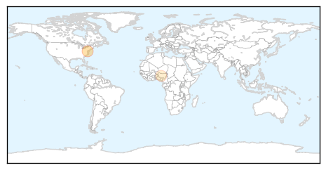

Hemmorhagic Fever
30-Day Web Trend
30 alerts, 0 warnings

30-Day Twitter Trend
0 alerts, 0 warnings

Article Locations
Article Confidences

Top Articles:
Top Tweets:
-
No tweets found for Jul 31, 2014
Cholera
30-Day Web Trend
4 alerts, 0 warnings

30-Day Twitter Trend
0 alerts, 0 warnings

Article Locations

Article Confidences

Top Articles:
- 0.996
- Database of Press Releases related to Africa - APO-Source
- 0.995
- South Sudanthreat of Chollera grows
- 0.995
- SOUTH SUDAN – THREAT OF CHOLERA GROWS
- 0.980
- South Sudan: Red Cross implements measures to prevent the spread of cholera in Torit
- 0.976
- Ban Ki-moon calls upon the international community to help Haitians continue to help themselves.
- 0.967
- 197 Cholera cases recorded at La General Hospital
- 0.959
- Rains, food crisis and a continuing conflict: South Sudan battles with a cholera outbreak
- 0.948
- Cholera outbreak reaching epidemic status – AMA
- 0.875
- Street plays to put across message
- 0.832
- Marine Bacterial Infection Kills 1 in Sarasota County
- 0.817
- Vibrio vulnificus: What is the Flesh-Eating Bacteria that has Killed 10 British Tourists in Florida?
- 0.792
- Cholera Kills 3 Damboa IDPs, Affects 100 Others
- 0.776
- Flesh-Eating Bacteria Found in Florida Beach, Health Officials Issue Warning: 'Be Very Careful'
- 0.586
- Other U.S. States Threatened, 32 Hospitalized, 10 Killed Including Florida Resident, How Can You Prevent Infection?
- 0.552
- Workshop on the importance of water quality opens
Top Tweets:
-
No tweets found for Jul 31, 2014